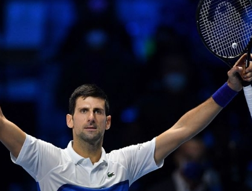

I spend my free time exploring a range of interests.
I enjoy visiting art museums, attending classical concerts.
Aside these nerdy hobbies, I also love playing video games and tennis.
I'm delighted to share these aspects of my life with you here!

The Museum of Fine Arts, Boston (MFA), is one of the largest and most comprehensive art museums in the United States. Established in 1870, it houses a diverse collection that spans many cultures and time periods, featuring everything from ancient Egyptian artifacts to contemporary American art. The MFA offers a rich array of exhibitions and educational programs.

Claude Monet was a foundational figure in the Impressionist movement, renowned for his vivid landscape paintings and innovative use of light and color. Born in France in 1840, Monet's work captures the transient effects of nature, exemplified in his series of water lilies and haystacks. His techniques profoundly influenced modern art.

The National Symphony Orchestra (NSO), based in Washington, D.C., is one of America's premier symphony orchestras. Founded in 1931, the NSO performs at the Kennedy Center and is known for its classical and contemporary repertoire, educational initiatives, and community outreach. It plays a vital role in the nation's cultural life.
My favorite tennis player

Novak Djokovic is a Serbian professional tennis player widely regarded as one of the greatest in the sport's history. Born in 1987, Djokovic has won multiple Grand Slam titles, achieving a career Grand Slam and holding numerous records, including weeks at world No. 1. His playing style combines exceptional athleticism and precision.